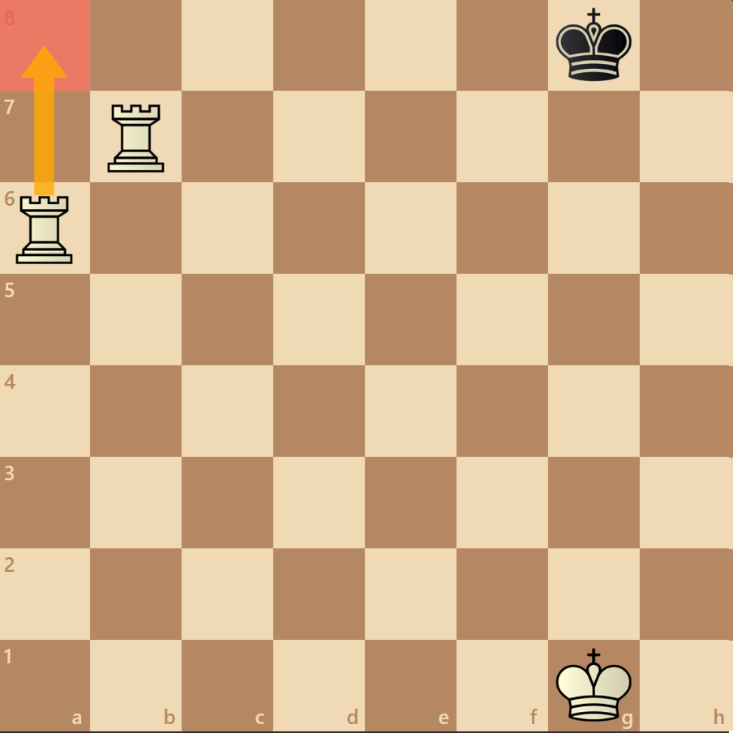
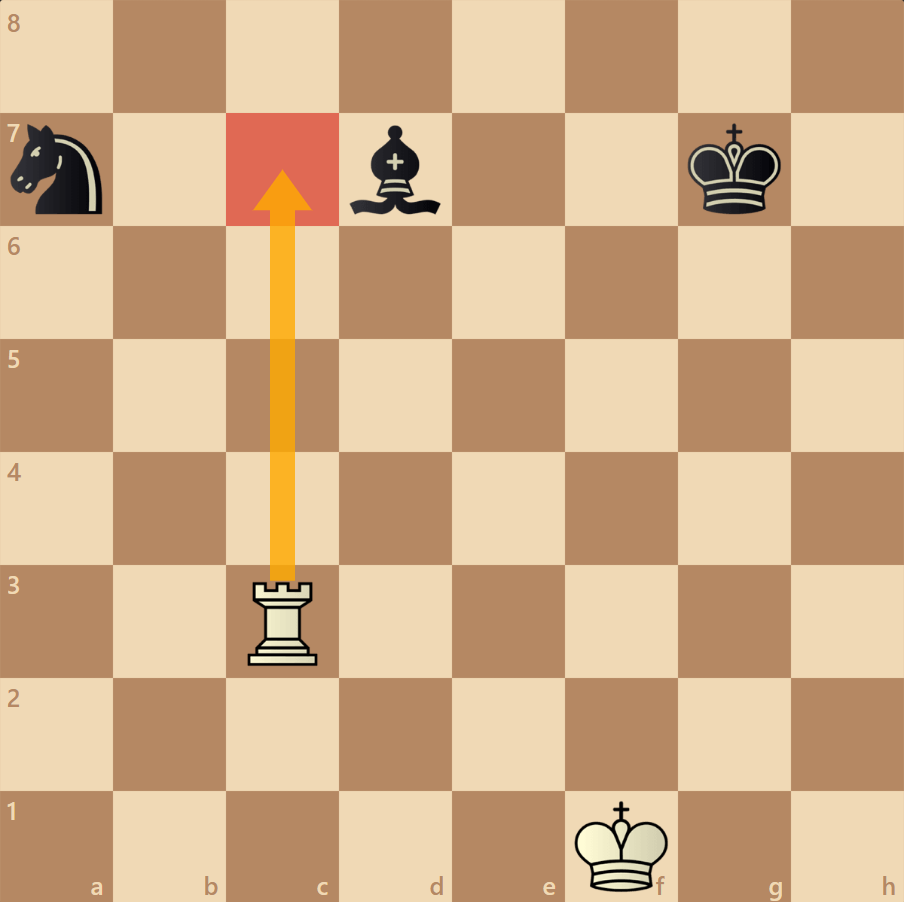
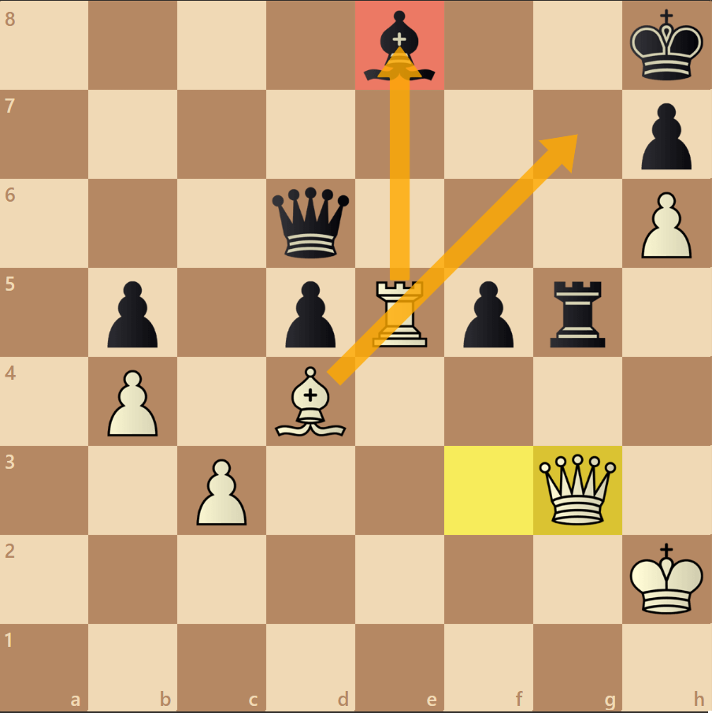

Mate no próximo lance
Podemos analisar que no próximo lance das brancas movendo a torre para a casa de A8 seria Xeque mate, sendo assim aplicando o Xeque-mate escadinha de torre.
Ataque duplo
Esse ataque é bastante comum nos jogos, tendo em vista ganhar uma peça inteira do seu adversário, atacando duas peças ao mesmo tempo.
Xeque descoberto
Um dos xeques mais fortes é o xeque descoberto, movendo uma peça que está obstruindo outra peça que está cravada no rei inimigo.